Lecture 3: Crypto Indices: CRIX, VCRIX and Investible Index Funds
Daniel Traian PELE
Bucharest University of Economic Studies
IDA Institute Digital Assets
Blockchain Research Center
Master Blockchain for Business (MBB), FABIZ
24 November 2026
Lecture 3: Crypto Indices: CRIX, VCRIX and Investible Index Funds
Daniel Traian PELE
Bucharest University of Economic Studies
IDA Institute Digital Assets
Blockchain Research Center
Master Blockchain for Business (MBB), FABIZ
24 November 2026
“While most CC indices look similar at the structural level, their design choices create fundamentally different exposures.” — Găman, Będowska-Sójka, Pele & Härdle (2026), White paper on cryptocurrency indices (CC: cryptocurrency)
The question of the lecture is practical: how can a market of thousands of coins be summarised in one number that an investor can actually buy? A fund needs a benchmark against which its managers are judged; an exchange-traded product needs an index that it can replicate at low cost, every day, with coins that can be bought and sold in size.
The route has six steps, followed by a wider view. The first explains why an index is needed and what makes crypto difficult: concentration and survivorship bias. The second builds CRIX step by step: the Laspeyres formula, the divisor, the liquidity rule and the information criterion that fixes the number of constituents. The third replicates the index on real data and compares the replica with the published CRIX. The fourth describes the real CRIX from 2017 to 2026, and the fifth its volatility index VCRIX. The sixth moves from the index to a fund and measures how closely a spot Bitcoin fund follows Bitcoin. The last section places CRIX among nine types of crypto indices, with their formulas. Lecture 4 then develops the generalised autoregressive conditional heteroskedasticity (GARCH) model used here for CRIX into a full toolkit for volatility and tail risk.
In brief
Three texts are the core reading. Trimborn & Härdle (2018) define CRIX and its rule for the number of constituents; Kim, Trimborn & Härdle (2021) build VCRIX, the volatility index of CRIX; Găman, Będowska-Sójka, Pele & Härdle (2026) is a white paper of the IDA Institute Digital Assets that classifies crypto indices into types and describes their methodologies. For further reading, Trimborn, Li & Härdle (2020) study how liquidity constraints change portfolios of cryptocurrencies, and Petukhina et al. (2021) evaluate portfolio allocation strategies that include cryptocurrencies.
The data come from five sources. CRIX and VCRIX were read from the chart data of thecrix.de. Daily prices and traded volumes in US dollars (USD) of ten coins — Bitcoin (BTC), Ethereum (ETH), Dogecoin (DOGE), Cardano (ADA), Litecoin (LTC), Bitcoin Cash (BCH), Ethereum Classic (ETC), Monero (XMR), Dash (DASH) and Zcash (ZEC) — and of IBIT come from EODHD, to 30 October 2026. The circulating supply of each coin, needed for market values, comes from Coin Metrics, and the effective federal funds rate from the Federal Reserve Economic Data (FRED) of the St. Louis Fed. All files are in the `data/` folder of the course repository, and the lecture notebook reproduces every number.
In brief
While most CC indices look similar at the structural level, their design choices create fundamentally different exposures.
Lectures 1 and 2 studied individual coins: their prices, returns, volatility and crashes. An investor, a fund manager or a regulator who wants to speak about "the crypto market" needs something else: one number that summarises thousands of coins, that moves like the market as a whole, and that a fund can actually buy. This number is a market index. Building it for crypto is harder than for equities, because the market is concentrated in one or two coins, because coins appear and disappear continuously, and because many small coins are hardly traded.
The lecture follows the CRIX (CRypto IndeX) of Trimborn & Härdle (2018), today published as the Royalton CRIX Crypto Index. CRIX is a market-value index with a divisor, like the major stock indices, but it chooses its number of constituents with a statistical rule: an information criterion that compares candidate indices with the total market. The lecture explains the construction with full formulas, replicates the index on real data, describes the real CRIX and its volatility index VCRIX from 2017 to 2026, and asks the question every index product faces: how closely does a fund follow its index? It ends with a wider view: following Găman, Będowska-Sójka, Pele & Härdle (2026), CRIX is one of nine types of crypto indices, from market and sector indices to volatility, yield and sentiment indices, and two of them are rebuilt on our data.
The data are the daily values of CRIX and VCRIX from thecrix.de (CRIX from 6 September 2017, VCRIX from 4 January 2018, both to 6 November 2026), daily prices and volumes of ten coins and of the iShares Bitcoin Trust exchange-traded fund (IBIT) from the data vendor EOD Historical Data (EODHD), hourly Bitcoin prices from the same vendor, and the circulating supply of the ten coins from the Coin Metrics Community API. The effective federal funds rate, used for the cash part of a yield index, comes from FRED: DFF.
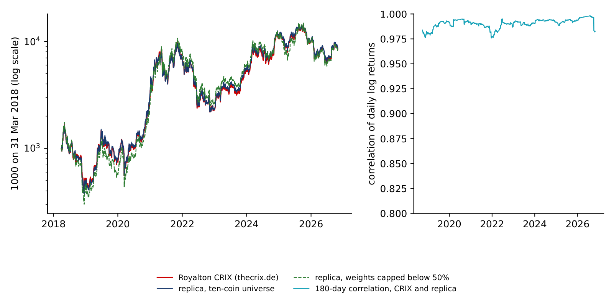
The Appendix holds data notes and the details of the kernel density estimator.
An index is useful only if it does three things at once: represent the market, be investible, and be stable. The section explains these requirements, shows how concentrated the crypto market is, and measures on real data how much a backtest built from today's winners overstates past returns.
A benchmark is one number for the performance of a market. Fund managers are compared with it, traders hedge with products built on it, and researchers use it as "the market" in their models. For equities the S&P 500 or the DAX play this role. For crypto there is no single obvious choice, and the choice matters.
Three requirements define a good index. It must be representative: its returns should move like those of the whole market, which we call the total market index (TMI), the market-value index of all eligible coins. It must be investible: it should contain few and liquid constituents, so that a fund can buy and hold them at low cost. And it must be stable: its rules are fixed in advance, and its constituents do not change every day.
Two features of crypto make these requirements hard to meet together. The market is concentrated: one or two coins hold most of the value, so that a market-value index is close to a Bitcoin index. And coins enter and exit continuously: new coins are launched every day and others are abandoned, so a list of today's coins hides the ones that died. The trade-off is clear: more constituents represent the market better but cost more to trade. CRIX resolves it with a statistical rule that chooses the number of constituents from the data (Trimborn & Härdle, 2018).
In brief
The chart shows the market values of the ten coins with public supply data, computed as price times current supply, from 1 January 2018 to 30 October 2026. Bitcoin's share of the ten rose from 57.3% on 1 January 2018 to 82.2% on 30 October 2026, with a maximum of 87.1% on 21 April 2025. Bitcoin held more than half of the value of the ten coins on 99.8% of the days.
The right panel turns the shares into one number, the effective number of coins \(1/\mathrm{HHI}\), where HHI is the Herfindahl–Hirschman index defined on the next slide. It was 2.97 in January 2018, when Ethereum and several other coins still held large shares, and is 1.44 today. In this universe, ten coins behave like fewer than one and a half equal coins.
In brief
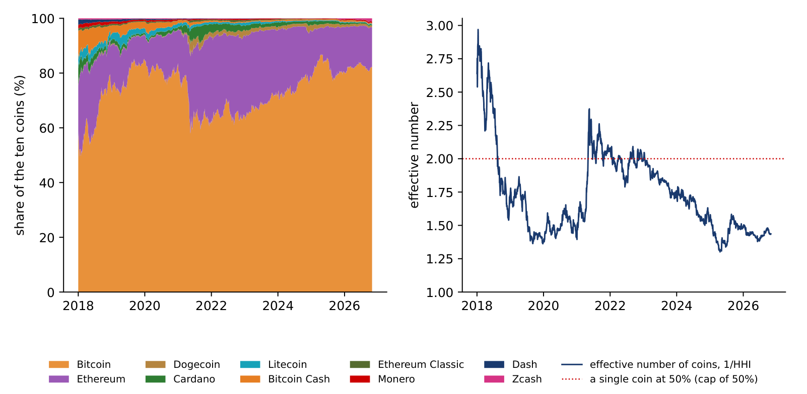
The Herfindahl–Hirschman index (HHI) is the measure that competition authorities use for market concentration. With value shares \(w_i = M_i/\sum_j M_j\) of \(N\) coins,
The HHI ranges from \(1/N\), when all coins have equal shares, to 1, when one coin holds everything; its inverse is the number of equal coins that would give the same concentration.
On 30 October 2026 Bitcoin held 82.2% of the ten coins, Ethereum 14.5% and the other eight 3.4% together. The squares are \(0.822^2 = 0.675\) and \(0.145^2 = 0.021\); the eight small coins add almost nothing, so \(\mathrm{HHI} = 0.696\) and \(N_{\text{eff}} = 1/0.696 = 1.44\). A market-value index of these coins is therefore mostly a Bitcoin index. A capped index limits the weight of the largest constituent, for example below 50%, a rule discussed later in the lecture.
In brief
Survivorship bias arises when a sample is built from the assets that are alive today: the assets that failed or shrank are missing, and the past returns of the survivors look better than what an investor could actually have earned. Brown et al. (1992) showed how strong this effect is in studies of fund performance. In crypto it is severe, because coins are launched, abandoned or delisted every day.
A closely related error is look-ahead selection: choosing the constituents of a historical index with information that was not available at the time. A backtest that starts in 2018 with the largest coins of 2026 knows, in 2018, which coins will grow. CRIX avoids both errors by construction: at each reselection date its constituents are chosen from the data known on that date (Trimborn & Härdle, 2018).
The test on our ten coins compares two baskets, both bought on 1 January 2018. The ex-ante basket holds the five largest coins of that day, the choice an investor could really have made. The ex-post basket holds the five largest coins of 30 October 2026, the choice a backtest built today would make.
In brief
With equal weights, 100 USD invested in the ex-ante basket (BTC, ETH, BCH, ADA, LTC) became 184 USD by 30 October 2026, a compound annual growth rate of 7.1%. The same 100 USD in the ex-post basket (BTC, ETH, ZEC, DOGE, XMR) became 418 USD, 17.6% a year. The difference comes almost entirely from the selection: Zcash ranked 9th of the ten coins by market value in 2018 and 3rd in 2026, Dogecoin 10th and 4th, while Bitcoin Cash, Cardano and Litecoin, large in 2018, lost rank.
With market-value weights the gap is smaller, 401 USD against 491 USD (CAGR 17.1% against 19.8%), because Bitcoin and Ethereum dominate both baskets. The lesson is general: any historical performance of a list of "today's top coins" overstates what an investor could have earned, and the overstatement is largest for equally weighted baskets, which give the most weight to the small coins whose fortunes changed most.
In brief
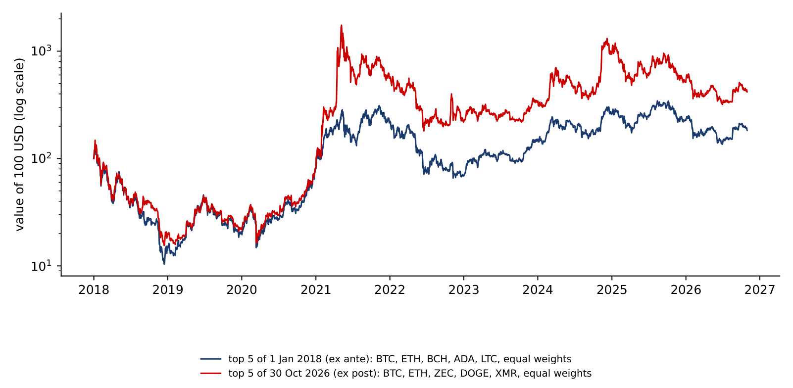
Section summary
The crypto market is highly concentrated, with an effective number of about 1.4 coins among the ten studied, and a basket chosen with today's knowledge earns far more in a backtest than a basket an investor could have chosen at the time. A good crypto index must therefore select its constituents with information available at each date, and must decide how much weight the dominant coin may carry.
The section builds CRIX from its formulas: the Laspeyres index with a divisor, the rules for rebalancing and reselection, the liquidity rule, the information criterion that fixes the number of constituents, its smoothed version over six months, and capped weights. Each step is illustrated with numbers from our own replication.
A Laspeyres index values today, at today's prices, a basket fixed at a base time 0:
where \(P_{it}\) is the price of coin \(i\) at time \(t\) and \(Q_{i0}\) the number of coins of \(i\) in circulation at time 0. The numerator is the market value of the basket today, the denominator its value at the base time; the index starts at 1,000.
CRIX uses the same idea in market-value form (Trimborn & Härdle, 2018):
with \(k\) constituents. Each coin enters with a weight proportional to its market value, \(w_{it} = \mathrm{MV}_{it}/\sum_j \mathrm{MV}_{jt}\). Between two rebalancing days the quantities \(Q_i\) are fixed, so only prices move the index: a coin whose price doubles doubles its contribution to the numerator.
In brief
On a rebalancing day \(\tau\) the basket changes: a coin enters or leaves, or the quantities \(Q_i\) are updated to the new circulating supply. Without an adjustment the index would jump on that day even if no price moved. The divisor removes this jump: it is chosen so that the index computed with the new basket equals the index computed with the old basket,
The same device keeps stock indices such as the S&P 500 or the DAX continuous when a company enters or leaves the index. In CRIX two calendars apply (thecrix.de). Monthly, the weights are recalculated from current market values (rebalancing). Quarterly, the constituents themselves are reselected (reconstitution). The difference matters for an investor: rebalancing changes the amounts held, reconstitution may replace coins.
In brief
Our replica, described later in the lecture, had a quarterly reselection day on 30 September 2026, with four constituents: Bitcoin, Ethereum, Zcash and Dogecoin. The index stood at \(\mathrm{CRIX}_\tau = 9{,}521.15\). The table gives prices, supplies, market values and weights on that day, and the prices one month later.
The calculation has three steps. First, the market value of the new basket is \(\sum_i \mathrm{MV}_{i\tau} = 1{,}678.74 + 327.65 + 24.27 + 14.75 = 2{,}045.41\) billion USD. Second, the new divisor follows from (3.4): \(2{,}045.41 \times 10^9 / 9{,}521.15 = 214.83\) million, against 214.67 million before the change. The index level is unchanged on that day; only the divisor moves. Third, on 30 October 2026 the quantities are the same and the prices have changed: the basket is worth \(\sum_i P_{it}Q_i = 1{,}857.94\) billion USD, and the index is \(1{,}857.94 \times 10^9/(214.83 \times 10^6) = 8{,}648.5\), a fall of 9.2% in one month, mostly because Bitcoin fell from 83,553.85 to 77,198.21 USD.
In brief
| Coin | price, 30 Sep 2026 (USD) | supply (million) | market value (billion USD) | weight (%) | price, 30 Oct 2026 (USD) |
|---|---|---|---|---|---|
| Bitcoin | 83 553.85 | 20.09 | 1 678.74 | 82.07 | 77 198.21 |
| Ethereum | 2 683.68 | 122.09 | 327.65 | 16.02 | 2 241.05 |
| Zcash | 1 436.40 | 16.90 | 24.27 | 1.19 | 1 268.64 |
| Dogecoin | 0.0945 | 156 136 | 14.75 | 0.72 | 0.0759 |
The left panel shows the replica index, 1,000 on 31 March 2018; the right panel its divisor, recomputed at each of the 103 monthly rebalancing days. The divisor moves in steps: when a coin enters or leaves, and when supplies change. The index level is unchanged on each of these days, by construction.
The general upward drift of the divisor has a simple reason. New Bitcoin, Ethereum and Dogecoin are issued continuously, so the circulating supply grows; at each rebalancing the larger quantities raise \(\sum_i \mathrm{MV}_{i\tau}\), and the divisor rises in proportion so that the index does not. Growth in supply is not a return for the holder of one coin, and the divisor keeps it out of the index.
In brief
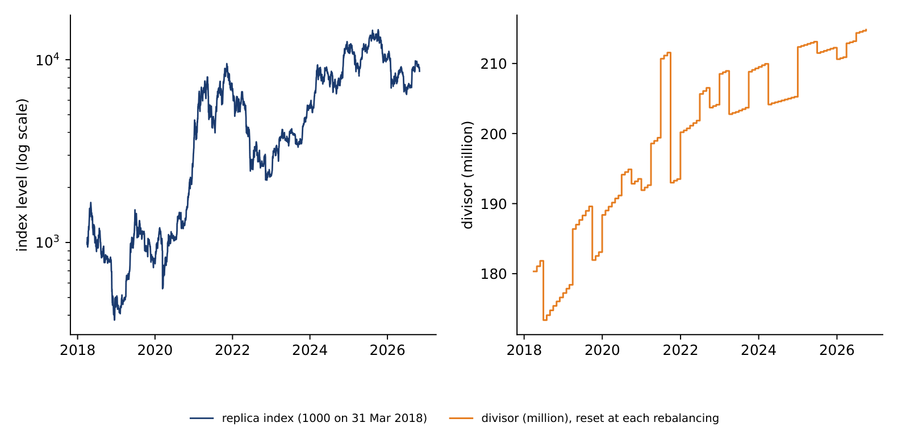
Before ranking, CRIX filters the universe. The liquidity rule (thecrix.de) keeps a coin only if its average daily traded volume (ADTV) in the last period is at least the 25th percentile of the ADTVs of all coins:
The least traded quarter of the universe is excluded: a coin may have a large market value but trade so little that a fund could not buy it without moving its price.
Stablecoins are excluded: their price is pegged, not formed by the market (Royalton Partners: CRIX). The eligible coins are then ranked by market value, and the candidate indices take the first \(k\) coins of the ranking.
In our replica the liquidity rule is applied on the last 90 days before each quarterly reselection. Monero failed it in 33 of 35 quarters, Dash in 24 and Zcash in 22; Bitcoin, Ethereum, Litecoin and Bitcoin Cash always passed.
In brief
The central idea of CRIX is to choose the number of constituents \(k\) by comparing candidate indices with the total market (Trimborn & Härdle, 2018). The candidate \(\mathrm{CRIX}(k, \beta)\) holds the largest coin with weight 1 and the next \(k - 1\) coins with free weights \(\beta\), estimated so that the candidate tracks the TMI as closely as possible. Its tracking residual on day \(t\) is the difference of daily log returns:
The distribution of these residuals is estimated without assuming a Normal shape. The residuals of the one-coin index, \(\hat\varepsilon_s(1,1)\), define a kernel density with a Gaussian kernel \(\varphi\) and a bandwidth \(h\); to avoid evaluating each point on its own bump, the leave-one-out version is used (details in the Appendix):
where IQR is the interquartile range and \(\hat\sigma\) the standard deviation of the residuals. The Akaike information criterion (AIC) of Akaike (1974) then scores each candidate:
The first term measures fit: each added coin pushes the residuals towards zero, where the density is highest, so the log-likelihood rises. The second term is the penalty, 2 for each added coin. Two stopping rules are used: the ECRIX rule stops at the first \(k\) at which the AIC rises; the EFCRIX rule takes the global minimum.
In brief
An AIC curve computed on one day is noisy: a small change of prices can move its minimum from one \(k\) to another, and an index whose constituents change for such reasons is costly for a fund that follows it. Our replica therefore smooths the decision over six months. At each of the last six month-ends the AIC curve is computed on its own 90-day window; the six curves are pooled, polynomials in \(k\) of degree 1 to \(k_{\max} - 2\) are fitted through them, the degree with the lowest AIC of the fit is kept, and the minimum of the fitted polynomial gives the number of constituents.
The smoothing has a price: when the market really changes, the rule reacts later than a rule based on one day.
In brief
The left panel shows \(\mathrm{AIC}(k)\) for our replica on the 90 days to 30 September 2026. Seven coins passed the liquidity rule on that date; Ethereum Classic, Monero and Dash were excluded. From \(k = 1\) to \(k = 2\) the AIC falls by 284 points: adding Ethereum to Bitcoin is decisive for tracking the market. After \(k = 3\) the curve is almost flat.
The right panel applies the smoothed rule: the AIC curves at the six month-ends up to 30 September 2026, each on its own 90-day window, pooled and smoothed by a polynomial in \(k\) whose degree, 5, is chosen by the AIC of the fit. The minimum of the fitted polynomial lies at \(k = 3\). On a small universe the rule illustrates the principle, not the commercial calculation.
In brief
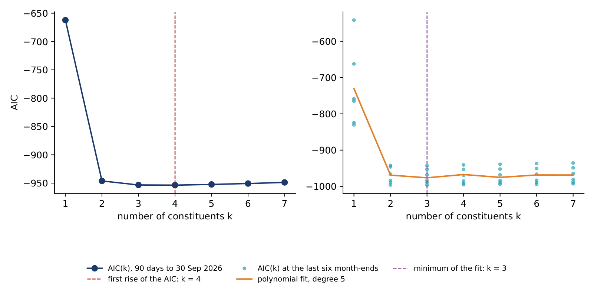
The table lists the AIC values of the last quarter. The eligible coins, ordered by market value on 30 September 2026, are BTC, ETH, ZEC, DOGE, ADA, BCH and LTC.
Reading the table takes three steps. First, the AIC falls until \(k = 4\) (\(-953.6\)) and rises at \(k = 5\) (\(-952.3\)), so the ECRIX rule chooses four constituents. Second, the global minimum is also at \(k = 4\), so the EFCRIX rule agrees. Third, the size of the gains tells how firm the choice is: the fourth coin improves the AIC by only \(953.6 - 953.3 = 0.3\) points, against 284 points for the second coin. On such a flat curve a small change in the data could move the choice between three and four constituents; this fragility is exactly what the smoothing over six months is designed to remove.
In brief
| \(k\) | 1 | 2 | 3 | 4 | 5 | 6 | 7 |
|---|---|---|---|---|---|---|---|
| \(\mathrm{AIC}(k)\) | \(-662.2\) | \(-946.2\) | \(-953.3\) | \(-953.6\) | \(-952.3\) | \(-950.7\) | \(-948.8\) |
Repeating the rule at each of the 35 quarterly reselections from 31 March 2018 to 30 September 2026 gives the chart. On average 7 of the 10 coins passed the liquidity rule. The first-rise (ECRIX) rule chose two constituents in 9 quarters, three in 13, four in 11 and five or six once each, with a mean of 3.2. The global-minimum (EFCRIX) rule usually agrees.
The smoothed rule, which pools six months of curves, chose three constituents in 30 of the 35 quarters. The smoothing makes the index more stable: fewer changes of constituents mean fewer trades for a fund that follows it. The small numbers reflect our small universe, dominated by Bitcoin and Ethereum.
In brief
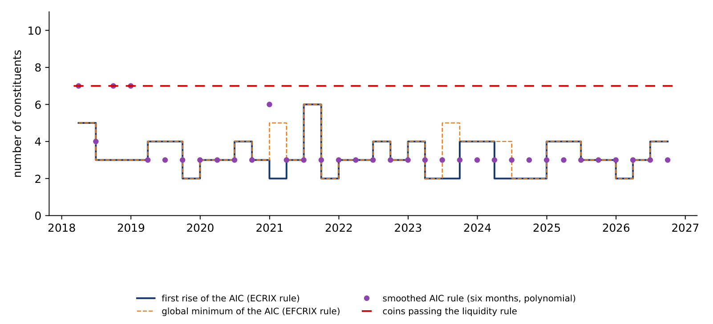
A market-value index of a concentrated market is dominated by its largest coin. A capped market-value index limits the weight of each constituent:
Here \(W_{it}\) is the market-value weight, \(\mathrm{CW}_{it}\) the capped weight, chosen so that no coin has an influence of 50% or more on the index, and \(\mathrm{AW}_{it}\) the adjustment factor applied to the market value. The capping algorithm is the one used by other capped indices: set any weight above the cap to the cap, share the excess among the other constituents in proportion to their weights, and repeat until no weight exceeds the cap.
On 30 September 2026 the market-value weights of the replica were Bitcoin 82.1%, Ethereum 16.0%, Zcash 1.2% and Dogecoin 0.7%. Capped just below 50%, they become Bitcoin 49.99%, Ethereum 44.7%, Zcash 3.3% and Dogecoin 2.0%: the excess of 32.1 percentage points goes mostly to Ethereum, the second largest coin.
In brief
The chart shows the weights of the replica at each monthly rebalancing from April 2018 to September 2026. With market-value weights (left), Bitcoin's weight ranged from 59.1% to 89.3%, with a mean of 76.9%. In this universe the 50% cap would therefore bind at every rebalancing.
The capped index (right) is a different product: about half Bitcoin and a much larger share of Ethereum. Whether a cap is appropriate depends on the purpose of the index: a cap improves diversification and limits the influence of one coin, while the uncapped index stays closer to the market as it is. The next section shows which of the two is closer to the published CRIX on our data.
In brief
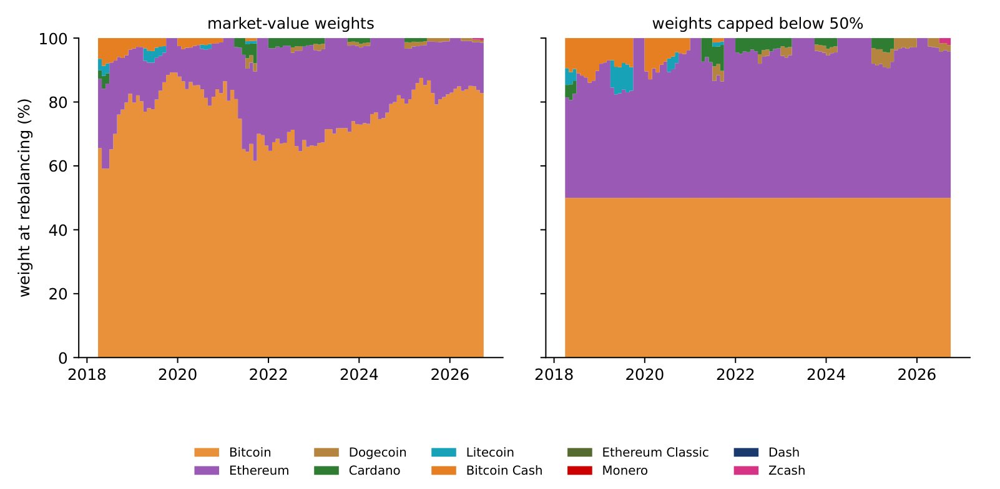
Section summary
CRIX is a Laspeyres market-value index with a divisor that keeps the level continuous when the basket changes. Its constituents pass a liquidity rule and are ranked by market value; their number is chosen by an information criterion that compares candidate indices with the total market, smoothed over six months. On our ten coins the rule chooses between two and four constituents in most quarters, and the curve is steep for the second coin and nearly flat afterwards.
The section rebuilds a CRIX-style index from public data with the published rules and compares it with the real CRIX. It then defines tracking error and tracking difference, the two numbers that measure how closely one series follows another.
The universe is the ten coins whose circulating supply is public in the Coin Metrics community data: BTC, ETH, DOGE, ADA, LTC, BCH, ETC, XMR, DASH and ZEC. Prices and volumes in USD are EODHD daily closes, and market values are price times current supply. Coins without a public supply history in this source, such as BNB or Solana (SOL), and coins whose reported supply includes tokens held by the issuer, such as XRP, are not included. The replica therefore covers a smaller universe than the published CRIX.
The rules follow Trimborn & Härdle (2018) and thecrix.de. At each quarter-end from 31 March 2018 to 30 September 2026 the liquidity rule is applied on the last 90 days, the eligible coins are ranked by market value, and the number of constituents is set by the first rise of the AIC on the last 90 days (the ECRIX rule). Within each quarter the weights are rebalanced monthly with the new supplies, and the divisor keeps the index continuous; the index starts at 1,000 on 31 March 2018.
Three benchmarks help to read the result: the TMI of the eligible coins, Bitcoin alone, and a version of the replica with weights capped below 50%. All are compared with the published CRIX on common days, 1 April 2018 to 30 October 2026, with \(n = 3{,}105\) daily log returns.
In brief
Both series start at 1,000 on 31 March 2018. On 30 October 2026 the published CRIX stands at 8,380 on this scale, the replica at 8,648 and the capped replica at 8,153. The three lines are hardly distinguishable on a log scale over eight and a half years that include two crypto winters.
The right panel shows the correlation of daily log returns on rolling 180-day windows. It stays between 0.976, its lowest value in December 2021, and 0.998. A handful of constituents from ten coins, chosen with the published rules, reproduces most of the daily movement of the published index.
In brief
The table compares four series with the published CRIX. The replica has a correlation of 0.990 with CRIX, a tracking error of 9.3% a year and a beta of 1.00. The TMI of the eligible coins is almost identical (0.990, 9.1%). The capped replica is further away (0.979, 14.5%, beta 0.91), and Bitcoin alone further still (0.971, 15.6%).
Three readings follow. First, the replica tracks its own TMI very closely, with a correlation of 0.9995 and a tracking error of 2.2% a year: the rule does what it is designed to do, representing the market with few coins. Second, the remaining gap between the replica and CRIX comes from the universe, the coins we do not have, not from the rule. Third, on these data the uncapped replica is closer to the published CRIX than the capped one. And a basket of a few coins tracks the market better than Bitcoin alone, even though Bitcoin holds most of its weight.
In brief
| Series compared with the published CRIX | correlation | tracking error (% a year) | beta |
|---|---|---|---|
| Replica (ECRIX rule, market-value weights) | \(0.990\) | \(9.3\) | \(1.00\) |
| TMI of the eligible coins | \(0.990\) | \(9.1\) | \(0.99\) |
| Replica, weights capped below 50% | \(0.979\) | \(14.5\) | \(0.91\) |
| Bitcoin alone | \(0.971\) | \(15.6\) | \(1.02\) |
Two numbers describe how a portfolio, a replica or a fund, follows its benchmark. With daily log returns \(r^{P}_t\) of the portfolio and \(r^{B}_t\) of the benchmark, and \(A\) returns per year,
The tracking error (TE) measures how much the portfolio wanders around the benchmark; the tracking difference (TD) measures by how much it lags or leads on average. \(A\) is 365 for coins, which trade every day, and 252 for exchange-traded funds.
For the replica against CRIX, \(\mathrm{TE} = 9.3\%\) a year. On a daily basis this is \(9.3/\sqrt{365} = 0.49\) percentage points: on a typical day on which CRIX moves by 3%, the replica moves by about 2.5% to 3.5%. A good index fund has a small TE, because it follows the index closely, and a TD close to minus its fees, because fees are the one steady drag it cannot avoid.
In brief
Section summary
A CRIX-style index built on ten coins with the published rules tracks the published CRIX with a correlation of 0.990 and a tracking error of 9.3% a year, much closer than Bitcoin alone. The replica follows its own total market almost perfectly, so the remaining gap reflects the universe of coins rather than the method.
The section turns to the published index itself: its path from 2017 to 2026, its growth, volatility and drawdowns, the crisis episodes, and a comparison with Bitcoin year by year.
The chart shows the daily values of CRIX from thecrix.de, 6 September 2017 to 6 November 2026, with Bitcoin scaled to CRIX on 16 March 2018. No values are published on 22 March 2026 and from 14 May to 7 June 2026.
The index fell to its low of 582.01 on 15 December 2018, at the end of the first crypto winter, reached its record of 21,523.34 on 6 October 2025, and stood at 12,250.34 on 6 November 2026, 43.1% below the record. Before 16 March 2018 the series comes from a different data source and moves one day ahead of the Bitcoin close of EODHD; the statistics that follow therefore start on 16 March 2018, the start of the official history.
In brief
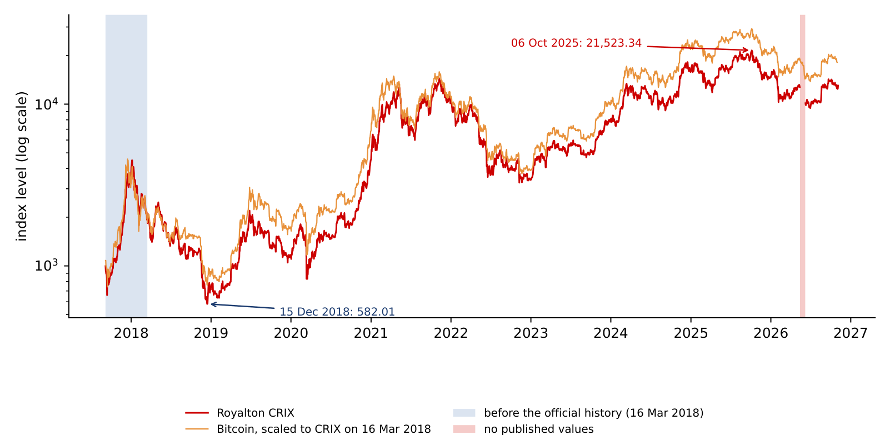
From 16 March 2018 to 31 October 2026 CRIX grew at a compound annual rate of 24.0%, with an annualised volatility of daily log returns of 65.0% and a maximum drawdown of \(-77.4\%\). Bitcoin grew at 29.4% a year with a volatility of 61.7% and a maximum drawdown of \(-76.6\%\). The daily returns of CRIX are skewed to the left (\(-1.09\)) and heavy-tailed (excess kurtosis 14.4), as found for single coins in Lecture 2; its worst day was 12 March 2020 (\(-46.5\%\)) and its best 2 April 2019 (\(+16.8\%\)).
A regression of CRIX returns on Bitcoin returns over 3,122 common days gives a beta of 1.020 (standard error 0.005), an \(R^2\) of 0.94 and a correlation of 0.971. Two conclusions follow. CRIX is slightly more volatile than Bitcoin: the other coins add volatility rather than diversification, because they move with Bitcoin and move more. And over this period CRIX grew less than Bitcoin, 24.0% against 29.4% a year, because Bitcoin's share of the market rose.
In brief
| 16 Mar 2018 – 31 Oct 2026 | CAGR (%) | ann. vol. (%) | max. drawdown (%) | skewness | exc. kurtosis | worst day (%) |
|---|---|---|---|---|---|---|
| CRIX | \(24.0\) | \(65.0\) | \(-77.4\) | \(-1.09\) | \(14.4\) | \(-46.5\) |
| Bitcoin | \(29.4\) | \(61.7\) | \(-76.6\) | – | – | – |
The compound annual growth rate (CAGR) is the constant yearly growth that turns the first value into the last: \((I_T/I_0)^{1/T} - 1\), with \(T\) in years. For CRIX, \(I_0 = 1{,}960.12\) on 16 March 2018 and \(I_T = 12{,}512.61\) on 31 October 2026, \(T = 8.63\) years; the ratio is 6.384 and \(6.384^{1/8.63} - 1 = 24.0\%\) a year. Bitcoin, on the same dates, went from 8,338 to 77,214 USD, \((77{,}214/8{,}338)^{1/8.63} - 1 = 29.4\%\) a year.
The drawdown \(D_t = I_t/\max_{s \le t} I_s - 1\) measures the loss from the last record. CRIX set its record of 21,523.34 on 6 October 2025 and fell to 9,439.22 on 30 June 2026: \(D = 9{,}439.22/21{,}523.34 - 1 = -56.1\%\). To recover, the index must gain \(21{,}523.34/9{,}439.22 - 1 = 128\%\). On 6 November 2026, at 12,250.34, it was still 43.1% below the record.
In brief
The drawdown curves of CRIX and Bitcoin almost coincide: the two fall and recover together. CRIX falls a little deeper in each crash, consistent with its beta above one. Since September 2017 CRIX was more than 50% below its record on 48.8% of the days, Bitcoin on 39.9%. For an investor in a broad crypto index, being far below the last peak is the normal state, not the exception.
In brief
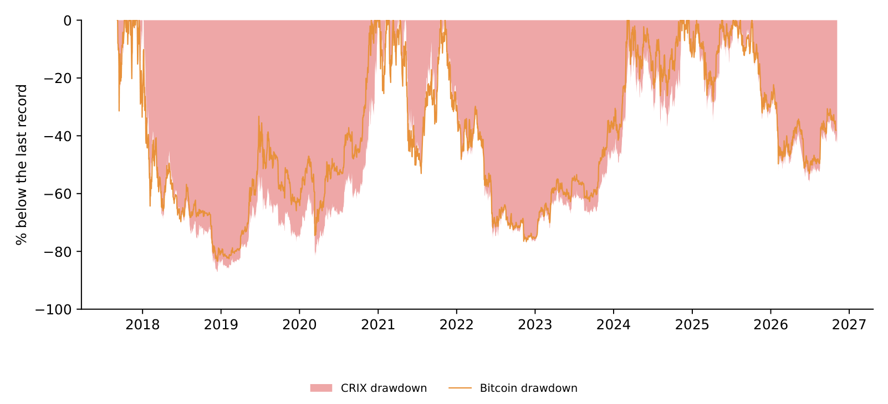
The table lists the falls of CRIX deeper than 50%. The first, from 4,510.28 on 5 January 2018 to 582.01 on 15 December 2018, cost 87.1% and took 1,091 days from peak to the next record; its peak lies before the official history. In 2021 the index lost 52.6% between May and July and recovered within 163 days. The second long winter, from 14,484.51 on 8 November 2021 to 3,268.34 on 9 November 2022, cost 77.4% and lasted 1,099 days from peak to record. The latest fall, from the record of 6 October 2025 to 30 June 2026, cost 56.1% and has not yet been recovered.
Three shocks, measured as cumulative log returns over the same windows as in Lecture 2, show how the broad index reacts to different events. In the COVID-19 crash (19 February to 23 March 2020) CRIX lost 45.0 log points and Bitcoin 40.6. In the collapse of the stablecoin TerraUSD and its sister token Luna (5 to 12 May 2022) CRIX lost 31.0 and Bitcoin 23.0; in the bankruptcy of the exchange FTX (5 to 21 November 2022), 33.8 against 29.9. In crypto-specific shocks the broad index loses more than Bitcoin: smaller coins fall harder when confidence in the crypto ecosystem itself is shaken.
In brief
| Peak | level | trough | depth (%) | new record | days peak to record |
|---|---|---|---|---|---|
| 5 Jan 2018 | 4 510.28 | 15 Dec 2018 (582.01) | \(-87.1\) | 31 Dec 2020 | 1 091 |
| 9 May 2021 | 12 644.70 | 20 Jul 2021 (5 994.23) | \(-52.6\) | 19 Oct 2021 | 163 |
| 8 Nov 2021 | 14 484.51 | 9 Nov 2022 (3 268.34) | \(-77.4\) | 11 Nov 2024 | 1 099 |
| 6 Oct 2025 | 21 523.34 | 30 Jun 2026 (9 439.22) | \(-56.1\) | not yet | – |
Calendar-year returns make the comparison concrete (2018 from 16 March, 2026 to 31 October). CRIX beat Bitcoin only in 2021, with \(+125.7\%\) against \(+59.7\%\), the year of the large rally of alternative coins. In the falling years 2018, 2022, 2025 and 2026 CRIX lost more than Bitcoin, and in the rising years 2019, 2023 and 2024 it gained less.
For a Bitcoin investor, then, a broad crypto index has not offered protection: it is more volatile, falls more in bad years and has lagged in most good years. Its value lies elsewhere: it measures the market as a whole, and in a year like 2021 the market as a whole was very different from Bitcoin.
In brief
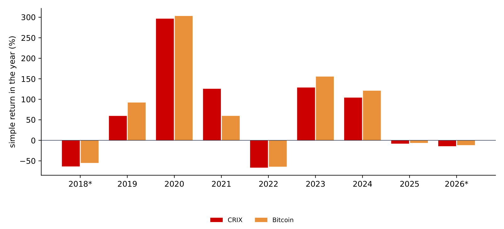
Section summary
From 16 March 2018 to 31 October 2026 CRIX grew by 24.0% a year with a volatility of 65.0% and a maximum drawdown of 77.4%; its beta on Bitcoin is 1.02 and its correlation 0.971. It reached its record of 21,523.34 on 6 October 2025 and lost 56.1% by 30 June 2026. CRIX falls more than Bitcoin in crypto-specific shocks and outperformed it in only one calendar year, 2021.
Volatility is the central risk number of the crypto market. The section explains why a volatility index is useful, how VCRIX is built, what its 30-day window implies, how it reacts to falls and rises, and how it compares with a GARCH model and with our own forecast of next month's volatility.
Equity markets have a "fear gauge": the Cboe Volatility Index (VIX), the volatility over the next 30 days implied by the prices of S&P 500 options (Whaley, 2000). When investors fear large moves, they pay more for options, implied volatility rises and the VIX rises with it. For the crypto market as a whole there was no liquid option market on an index, and therefore no implied volatility to read.
Kim, Trimborn & Härdle (2021) built VCRIX to fill this gap: a forecast of the volatility of CRIX that plays the role of implied volatility. As a proxy for implied volatility they use the realised volatility of CRIX over a 30-day window, and they choose the forecasting model by its out-of-sample accuracy among GARCH models, the heterogeneous autoregressive (HAR) model and a neural network; the HAR model performed best. VCRIX serves as a daily risk thermometer for the whole market and as an input for risk limits, option pricing and volatility-timing strategies.
In brief
The building block is the realised volatility (RV) of CRIX over the last \(w\) days, annualised, with \(r_t\) the daily log return in percent:
The HAR model of Corsi (2009) forecasts volatility from its own recent values at three horizons, daily, weekly and monthly:
The three components stand for three kinds of traders: day traders who react to yesterday's move, and weekly and monthly investors who react to longer averages. The model is estimated by ordinary least squares (OLS), and the forecast \(\widehat{\mathrm{RV}}_{t+1}\) is the volatility expected for tomorrow. The index divides the forecast by a divisor, \(\mathrm{VCRIX}_t = \widehat{\mathrm{RV}}_t/\mathrm{Divisor}\), set so that VCRIX equals 1,000 on its start date; the published series starts at 1,000 on 4 January 2018.
In brief
The chart shows VCRIX from thecrix.de together with the 30-day realised volatility of CRIX computed from the published index. The two move together: the correlation of VCRIX with the realised volatility of the previous day is 0.943 over \(n = 3{,}020\) days.
VCRIX averaged 458 (median 427). Its maximum, 1,215.57, came on 13 March 2020, the day after the COVID-19 crash; its minimum, 105.09, on 14 August 2023, in the calm market of that summer; on 6 November 2026 it stood at 342.13. A regression of VCRIX on the previous day's realised volatility gives VCRIX \(\approx 74.4 + 6.11\,\mathrm{RV}^{(30)}_{t-1}\) with \(R^2 = 0.89\): a realised volatility of 50% a year corresponds to a VCRIX of about 380. The shaded period in 2026 marks the gap in the published CRIX and the 30 days after it, discussed next.
In brief
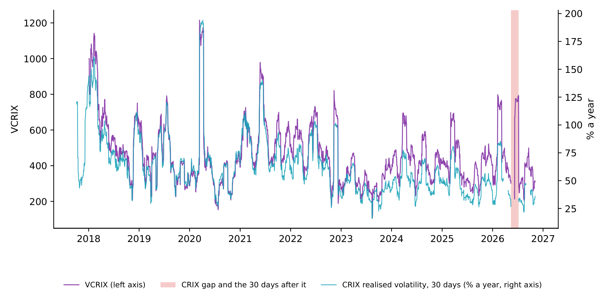
On 12 March 2020 CRIX fell by 46.5% in log terms. VCRIX was 405.66 on 12 March and 1,215.57 on 13 March: the crash entered the window one day later. One day can move the index this much because squared returns enter the sum: the crash adds \(46.5^2/30 = 72\) to the mean square of the 30-day window, which alone corresponds to \(\sqrt{365 \times 72} = 162\%\) of annual volatility.
Thirty days later the opposite happened. VCRIX was 1,159.78 on 11 April and 542.82 on 12 April 2020, although nothing special happened in the market that day: the crash day left the window. A rolling window produces such a "ghost" effect, a jump in and a jump out exactly one window apart.
The published series shows the same mechanism at a data gap. CRIX has no values from 14 May to 7 June 2026; a return over this 25-day gap enters a 30-day window as if it were one day. VCRIX jumped from 213.04 to 673.24 on 10 June and fell from 793.12 to 283.93 on 9 July 2026. This is a data artefact, and the window is excluded from our statistics. The general lesson is that a rolling window treats a shock as fully relevant for \(w\) days and then irrelevant, while a GARCH model lets old shocks fade gradually.
In brief
In equity markets volatility rises more after falls than after rises of the same size, the so-called leverage effect. The chart checks this for crypto: the daily change of \(\ln\) VCRIX on day \(t\) against the CRIX return on day \(t-1\), from 16 March 2018 to 13 May 2026, \(n = 2{,}978\) days. The correlation is \(-0.132\); with the same day's return it is 0.007, because VCRIX reacts one day later.
A regression with separate slopes for falls and rises, with heteroskedasticity- and autocorrelation-consistent (HAC) standard errors, gives a slope of \(-1.61\) (SE 0.14) after falls and \(+1.38\) (SE 0.12) after rises. Both are significant, and their sizes are close: a test of equal size is not rejected (p-value 0.10). The right panel shows the same pattern in groups: after a fall of more than 5% VCRIX rises by 8.6% on average, after a rise of more than 5% by 6.9%, and after quiet days it drifts down. In crypto, large moves in either direction raise expected volatility; the asymmetry towards falls is small on these data.
In brief
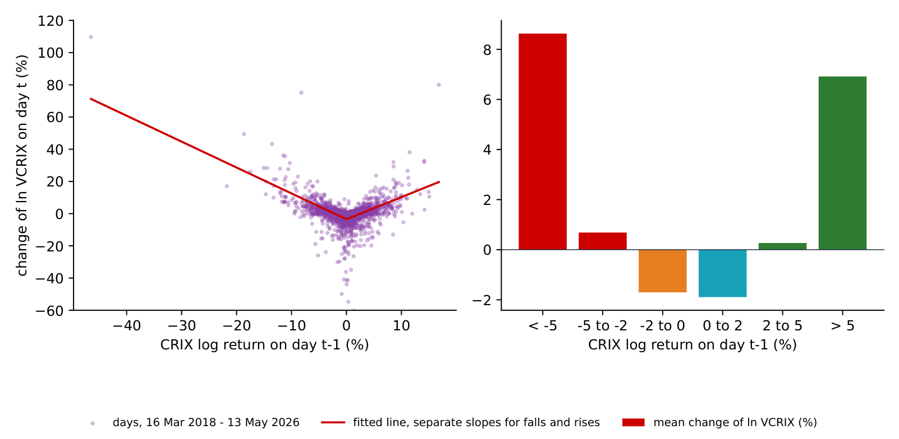
A model-based alternative to the rolling window is the GARCH(1,1) model of Bollerslev (1986). With Student-\(t\) errors for the daily log returns \(r_t\) (in %) of CRIX,
today's variance is a weighted combination of a constant, yesterday's squared shock and yesterday's variance; \(z_t\) has unit variance and \(\nu\) degrees of freedom.
Estimated on 16 March 2018 to 13 May 2026 (\(n = 2{,}979\) returns; the two returns around the missing 22 March 2026 are skipped), the model gives \(\hat\mu = 0.128\), \(\hat\omega = 0.254\), \(\hat\alpha = 0.084\), \(\hat\beta = 0.914\) and \(\hat\nu = 3.14\), with robust standard errors in the table. The persistence \(\alpha + \beta = 0.998\) is very high: a shock to variance halves only after \(\ln 0.5/\ln 0.998 \approx 370\) days. The estimate \(\hat\nu = 3.1\) signals very heavy tails, as found in Lecture 2. The annualised GARCH volatility \(\sqrt{365}\,\hat\sigma_{t+1}\) averaged 69.8% and peaked at 269% on 13 March 2020. Lecture 4 develops GARCH models, value at risk and expected shortfall in detail.
In brief
| \(\mu\) | \(\omega\) | \(\alpha\) | \(\beta\) | \(\nu\) | |
|---|---|---|---|---|---|
| estimate | \(0.128\) | \(0.254\) | \(0.084\) | \(0.914\) | \(3.14\) |
| SE (robust) | \(0.042\) | \(0.107\) | \(0.020\) | \(0.019\) | \(0.20\) |
The chart puts the three volatility measures side by side over \(n = 2{,}949\) days. VCRIX correlates 0.916 with the 30-day realised volatility and 0.844 with the one-day-ahead GARCH forecast; GARCH and realised volatility correlate 0.908.
All three agree on the volatility regimes: the turbulent 2018, March 2020, May 2021 and November 2022. They differ in their dynamics. VCRIX follows the 30-day window, with its jumps in and out; the GARCH volatility reacts at once to a large shock and then fades smoothly, at the speed set by its persistence. For a risk manager the GARCH reading is the more timely one after a shock, the VCRIX reading the more directly comparable with the realised risk of the last month.
In brief
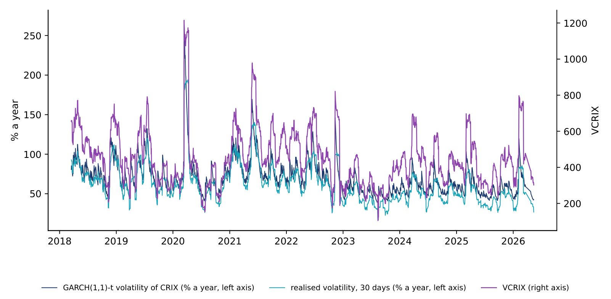
As an exercise we estimate a HAR model of our own, with a harder target: the realised volatility of CRIX over the next 30 days, from the daily, weekly and monthly components known today. The model is estimated on 16 March 2018 to 31 December 2023 (\(n = 2{,}117\) days) and tested, without re-estimation, from 2024 to February 2026 (\(n = 781\) days); training and test periods are strictly chronological.
The estimates, with HAC standard errors, are \(c = 48.0\) (6.5), \(\beta_d = 0.021\) (0.007), \(\beta_w = 0.112\) (0.042) and \(\beta_m = 0.153\) (0.089); the in-sample \(R^2\) is only 0.09. In the test period the root mean squared error of the forecast is 18.4 percentage points of annual volatility, against 18.6 for the naive forecast "next month equals last month"; the forecast correlates 0.73 with VCRIX. A month ahead, crypto volatility is hard to forecast: the HAR forecast stays close to the long-run mean and improves only slightly on the naive rule.
In brief
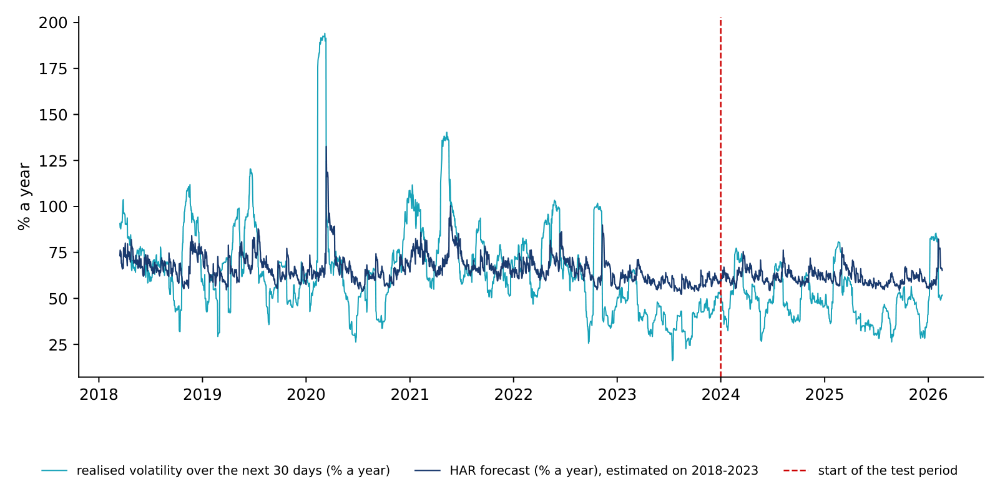
Section summary
VCRIX is a HAR-based forecast of the 30-day realised volatility of CRIX, normalised to 1,000 on its first day. It correlates 0.94 with the realised volatility, peaked at 1,215.57 after the crash of March 2020, and shows the jumps in and out that a 30-day window produces. Large moves in either direction raise it, and a GARCH(1,1) model with persistence 0.998 tells the same story about regimes with smoother dynamics.
An index is a number; investors buy funds. The section traces how CRIX went from research to a commercial index, explains how a fund follows an index and why it deviates, and measures the tracking of a spot Bitcoin fund on real data.
CRIX began as academic research. In 2015 and 2016 its first versions appeared as discussion papers at Humboldt-Universität zu Berlin, and in 2018 Trimborn & Härdle (2018) published the method in the Journal of Empirical Finance. The official history of the index starts on 16 March 2018 (Royalton Partners: CRIX).
In 2021 Royalton Partners AG acquired the rights to the index. From November 2021 the index has been run commercially as the Royalton CRIX Crypto Index. The two public sources describe the calculation agent differently: Royalton Partners: CRIX states that the index has been calculated by Royalton Partners since November 2021, while thecrix.de states that it has been calculated by S&P Global since November 2021. The stated target is to track the TMI "with as few as possible but more than 5 liquid cryptocurrencies", with stablecoins excluded (Royalton Partners: CRIX). In 2021 Kim, Trimborn & Härdle (2021) added VCRIX, the volatility index of CRIX.
In brief
An index provider publishes the constituents and their weights. The fund issues shares, takes investors' money and buys the constituents in the index weights. When investors buy or redeem shares, the fund buys or sells the coins.
An exchange-traded product (ETP) is a fund or note whose shares trade on a stock exchange. On 10 January 2024 the US Securities and Exchange Commission (SEC) approved spot Bitcoin exchange-traded funds in the US (SEC, 2024); a spot fund holds the coins themselves, not futures contracts on them.
A fund deviates from its index for several reasons. Fees are a steady drag and produce the tracking difference. Cash held for redemptions, trading costs, the timing of rebalancing and different price sources produce noise around the index, the tracking error. And small constituents may be illiquid, so that buying them moves their prices: this is why investible indices use a liquidity rule and a small number of constituents.
In brief
The iShares Bitcoin Trust (IBIT) is a spot Bitcoin fund that has traded since January 2024. The chart compares its adjusted closing price (EODHD) with the price of Bitcoin at 16:00 New York time, the time at which the fund is priced, taken from EODHD hourly data, from 12 January 2024 to 30 October 2026, \(n = 697\) trading days.
The left panel shows the ratio of IBIT to Bitcoin, in effect the amount of Bitcoin behind one share. It fell by 1.1% over the period, along a trend of \(-0.28\%\) a year: this is the tracking difference, close to the sponsor fee of 0.25% a year (iShares: IBIT). The right panel shows the daily differences of returns. With prices taken at the same time, the tracking error is 3.5% a year; with Bitcoin's close at midnight, Coordinated Universal Time (UTC), it is 20.6%.
In brief
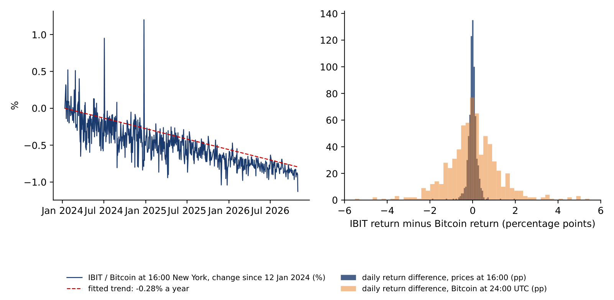
IBIT trades from 9:30 to 16:00 New York time on weekdays; Bitcoin trades 24 hours a day, 7 days a week. On the same days we can therefore compare the fund with two different Bitcoin prices.
With Bitcoin at 16:00 New York time, the standard deviation of the daily return differences is 0.223 percentage points, and \(\mathrm{TE} = 0.223 \times \sqrt{252} = 3.5\%\) a year; the correlation of returns is 0.998. With Bitcoin's daily close at 24:00 UTC, as in the EODHD daily file, the standard deviation is 1.299 points and \(\mathrm{TE} = 1.299 \times \sqrt{252} = 20.6\%\); the correlation drops to 0.907. The fund did not change; only the clock of the benchmark did. Over the whole period IBIT gained 73.6% and Bitcoin 75.6%, and the tracking difference was \(-0.28\%\) a year.
The lesson applies to every index product: compare a fund with its index at the time the fund is priced, and read the tracking error and the tracking difference separately. The first tells how closely the fund follows the index from day to day; the second, how much it costs the investor over time.
In brief
Section summary
A fund turns an index into a product by buying its constituents in the index weights; fees create a tracking difference and frictions a tracking error. CRIX became a commercial index in 2021, after its academic start. A spot Bitcoin fund, measured with synchronous prices, follows Bitcoin with a tracking error of 3.5% a year and a tracking difference of \(-0.28\%\), close to its fee.
CRIX is a broad market index, but crypto indices serve many other purposes. Following Găman, Będowska-Sójka, Pele & Härdle (2026), the section sorts them into nine types, reads the formula of one representative index of each type from its provider's methodology, and rebuilds two of the ideas on our own data: square-root weights and a protection floor.
Găman, Będowska-Sójka, Pele & Härdle (2026) reviewed the crypto indices whose methodology is public and grouped them by scope into nine types. A multi-asset index summarises several coins in one number, usually by market value, as the Bitwise 10 (BITX) and CRIX do. A sector index restricts the universe to one segment, such as decentralised finance (DeFi), smart-contract platforms or the Metaverse. A price index gives a reference price of one coin from several exchanges, and a futures index follows futures contracts that are rolled from one maturity to the next. A volatility index measures expected or realised variability, a "fear gauge" such as EVIV or VCRIX. A yield index tracks income from cash, lending or staking together with crypto exposure. A smart-beta index uses rule-based weights other than market value, a fundamentals index weights coins by on-chain activity such as fees and active users, and a sentiment index combines market and behavioural signals into one score.
Most of these indices share one backbone, the Laspeyres index with a divisor of the previous sections. They differ in four design layers: the universe, the weights and constraints, the data, and the operating rules for rebalancing and reconstitution. These choices, not the name of the index, determine the exposure an investor buys.
In brief
| Type | what it tracks | example |
|---|---|---|
| Multi-asset | several coins in one number, usually by market value | BITX; CRIX |
| Sector | one segment: DeFi, smart-contract platforms, Metaverse | CoinDesk Metaverse Select |
| Price | the spot price of one coin, from several exchanges | MarketVector Polygon VWAP Close |
| Futures | futures contracts, rolled from one maturity to the next | CoinDesk BFIC |
| Volatility | expected or realised variability: a “fear gauge” | EVIV; VCRIX |
| Yield | income from cash, lending or staking, with crypto exposure | LIXX Risk-Adjusted Bitcoin |
| Smart beta | rule-based weights other than market value | COINTILT |
| Fundamentals | on-chain activity: fees, active users | MVTT10F |
| Sentiment | market and behavioural signals in one score | CMC Fear and Greed |
The Bitwise 10 Large Cap Crypto Index (BITX) holds the ten largest eligible coins by free-float market value (Bitwise, 2025; Găman, Będowska-Sójka, Pele & Härdle, 2026):
where \(Q^{\text{ff}}_{it}\) is the free-float supply, the coins that can actually trade, and \(D_t\) the divisor. The index was set to 964 on 1 January 2017, the price of Bitcoin that day. The weights are then rescaled so that at least 87.5% go to coins that have a single-asset exchange-traded product (ETP) approved by the US Securities and Exchange Commission (SEC).
Both the trading venues and the coins must pass filters. A venue must be regulated, free of capital controls, have secure interfaces and carry at least 0.1% of global crypto volume. A coin must not be pegged, must be listed on several approved venues and have no critical security flaws; its volume over 30 days must exceed 1% of its free-float market value, and its risk of being classified as a security under US law must be low. The index is reconstituted monthly, and a committee and an advisory board review the rules. CRIX differs on one point: the number of constituents is chosen by the data, not fixed at ten.
In brief
The CoinDesk Metaverse Select Index is a sector index (CoinDesk, 2024). Its universe is the Metaverse group of the Digital Asset Classification Standard (DACS) of CoinDesk; meme coins are excluded, and the coins must be held in secure custody and be accessible to US investors. The coins are ranked by size and checked for liquidity with the median daily value traded (MDVT) over 30 days; between 5 and 10 coins are kept, each with a weight of at least 1%. The index is a Laspeyres index,
with \(S_i\) the circulating supply at the weighting date and \(\mathrm{WAF}_i\) a weighting adjustment factor; it is reconstituted quarterly.
The MarketVector Polygon VWAP Close Index is a price index (MarketVector, 2025a). It holds one coin, Polygon (MATIC), with a weight of 100%, and its daily close is the one-hour volume-weighted average price (VWAP) from 15:00 to 16:00 Central European Time, with a base value of 100 on 30 September 2020. After a hard fork the new coins may enter the index for a while, weighted by market value. The formula has the same structure,
with \(\mathit{cf}_i\) a cap factor, usually 1, \(\mathit{fx}_i\) the exchange rate to USD, and \(p_j, v_j\) the price and volume of trade \(j\) in the hour. Averaging over an hour of trades makes the close harder to move with a single trade.
In brief
The CoinDesk Bitcoin Futures Excess Return Index (BFIC) follows Bitcoin futures of the Chicago Mercantile Exchange (CME) (CoinDesk, 2025; Găman, Będowska-Sójka, Pele & Härdle, 2026). It was launched on 7 February 2024 with a base of 14,690.00 on 27 December 2017. The index holds the front contract; before it expires, the exposure is moved to the next contract, which is called the roll:
where \(U\) are the units of the lead (L) and next (N) contract and \(P\) their CME settlement prices at 16:00 New York time. The roll starts on the Friday before the last trade date and ends on the Wednesday: a quarter of the position moves each day over four days.
There are no market-value weights; the exposure is set in contract units. The return of the index has two parts: the change of the futures price and the roll yield. If the next contract is dearer than the lead one, a situation called contango, each roll buys fewer units, and the index lags spot Bitcoin.
In brief
The Ethereum Volmex Implied Volatility 30 Day Index (EVIV) measures the volatility over the next 30 days expected by the Ether options market (Volmex; Găman, Będowska-Sójka, Pele & Härdle, 2026). As for the VIX (Whaley, 2000), the variance of each maturity is computed from the prices of out-of-the-money calls and puts:
where \(V(K_j)\) is the price of the option with strike \(K_j\), \(F_i\) the forward price and \(K_{i,\text{ATM}}\) the at-the-money strike. The near and next variances are interpolated to 30 days, \(\sigma^2_{\text{raw}} = \omega_{\text{near}}\sigma^2_{\text{near}} + \omega_{\text{next}}\sigma^2_{\text{next}}\), and then smoothed by an exponentially weighted moving average (EWMA):
The half-life \(\tau\) is the number of periods after which an old value has lost half of its weight. VCRIX, studied earlier in this lecture, has no options to use: it forecasts the volatility of CRIX from its own past with a HAR model.
In brief
The LIXX Risk-Adjusted Bitcoin & USD Overnight Interest Index combines two parts: Bitcoin, and USD cash that earns the overnight interest rate (LIXX, 2023; Găman, Będowska-Sójka, Pele & Härdle, 2026). It starts with 19% in Bitcoin and 81% in cash. A protection floor is checked every day:
The index is rebalanced when the gap between the floor and the cash position exceeds the buffer: it sells Bitcoin after falls and buys after rises. A fee of 0.3% of the traded amount is charged. The index value is the value of the two parts, \(I_t = \sum_i W_{it}\,P_{it} - A_t\), with \(W_{it}\) the units of Bitcoin and of cash and \(A_t\) an adjustment for forks or changes of method.
We rebuilt the index with our reading of the rule: the cash is kept equal to the floor, so the index starts with 81% in cash, as published, and the cash earns the effective federal funds rate (FRED: DFF).
In brief
The chart compares our floor index with Bitcoin bought and held, both 1,000 on 31 March 2018, to 30 October 2026. The floor index grew by 9.9% a year, with a volatility of 9.1% and a maximum drawdown of \(-13.9\%\); Bitcoin grew by 32.3% a year, with a volatility of 61.6% and a maximum drawdown of \(-76.6\%\).
The right panel shows why. The weight of Bitcoin stayed between 6.1% and 20.0%, and the rule rebalanced 66 times in 8.6 years. The floor protects the investor in crypto winters but gives up most of the growth: it is a different product, not a safer version of Bitcoin.
In brief
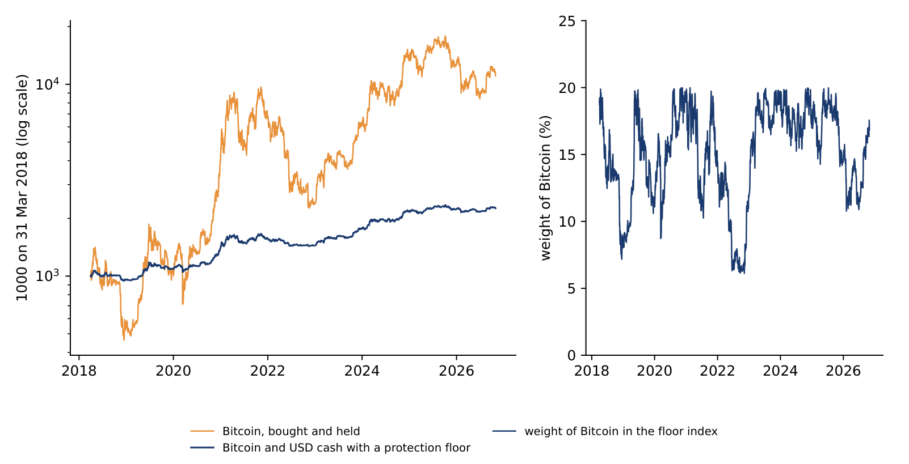
The Coinbase Size Tilt Index (COINTILT) is a smart-beta index (MarketVector, 2025b). It weights each coin by the square root of its market value,
which tilts the index towards smaller coins; there is no cap. A coin is eligible if it holds at least 0.25% of the market value of the MarketVector Digital Assets 100 index, has traded for 180 days with at least 25 million USD of volume a day, and can be held by custodians approved by Coinbase.
The MarketVector Token Terminal Fundamental Index (MVTT10F) is a fundamentals index (MarketVector, 2024). Its weights combine factor weights,
with two on-chain factors: fees, with \(a = 80\%\), and active users, with \(a = 20\%\), each the monthly mean of the square roots of the daily values. The index holds ten coins: the top seven by the factor ranking, then three from ranks 8 to 13; meme and privacy coins are excluded. Both indices use the same Laspeyres calculation as BITX and CRIX; only the weights change.
In brief
On 30 September 2026 the market values of our ten coins were, in billion USD, Bitcoin 1,678.7, Ethereum 327.7 and the other eight 81.7 together. With market-value weights, Bitcoin has \(1{,}678.7/2{,}088.1 = 80.8\%\) and Ethereum 15.8%.
With square-root weights, the square roots are \(\sqrt{1{,}678.7} = 41.0\) and \(\sqrt{327.7} = 18.1\), and their sum over the ten coins is 80.9. Bitcoin gets \(41.0/80.9 = 50.7\%\), Ethereum \(18.1/80.9 = 22.4\%\), and the other eight 26.9% together. The effective number of coins, \(1/\mathrm{HHI}\), is 1.48 with market-value weights, 3.15 with square-root weights and 10 with equal weights. The square root does not change the ranking of the coins; it compresses the distance between large and small ones.
In brief
The chart applies three weightings to the same ten coins, rebalanced monthly from 31 March 2018 to 30 October 2026: market value, as in BITX; the square root of market value, as in COINTILT; and equal weights. The market-value index grew by 28.0% a year with a volatility of 64.6% and a maximum drawdown of \(-77.9\%\); the square-root index by 26.7%, 69.7% and \(-83.4\%\); the equal-weight index by 32.8%, 80.0% and \(-84.5\%\).
The daily returns of the square-root index correlate 0.980 with those of the market-value index, those of the equal-weight index 0.880. Giving more weight to small coins raises volatility and deepens drawdowns; whether it raises growth depends on the period. The right panel shows the main difference: Bitcoin is about four fifths of the market-value index, half of the square-root index and a tenth of the equal-weight index.
In brief
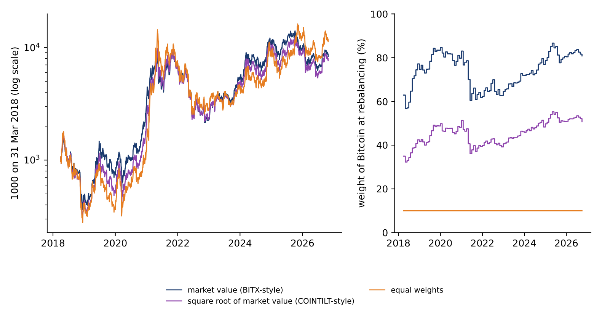
The CMC Crypto Fear and Greed Index of CoinMarketCap gives one daily score from 0, extreme fear, to 100, extreme greed (CoinMarketCap, 2025; Găman, Będowska-Sójka, Pele & Härdle, 2026):
Each component is scaled to 0–100 and weighted: volatility, from the implied volatility of Bitcoin and Ether options, 25%; market momentum and volume 25%; social media 15%; surveys 15%; Bitcoin dominance 10%; and search trends 10%. The score falls into bands: 0–24 extreme fear, 25–49 fear, 50 neutral, 51–74 greed and 75–100 extreme greed. It is not an investible index: there is no basket and no divisor, only a summary of signals, and the choice of weights is the provider's judgement.
In brief
CRIX is one of several crypto index families; the table describes the main ones from their providers' documents, without performance figures. The Royalton CRIX chooses its number of constituents with an information criterion, uses market-value weights, rebalances monthly and reselects quarterly (thecrix.de). The S&P Cryptocurrency Broad Digital Market index of S&P Dow Jones Indices, launched in 2021, covers more than 200 coins (S&P Dow Jones Indices: Cryptocurrency Indices). The Bloomberg Galaxy Crypto Index (BGCI) holds the largest eligible coins with a weight cap of 40% and a floor of 1%, and is reconstituted monthly (Bloomberg, 2020). The CoinDesk 20 (CD20) holds the 20 largest coins excluding stablecoins and memecoins, with a cap of 30% for the largest constituent and 20% for the others, and is reviewed quarterly (CoinDesk Indices, 2025). The Nasdaq Crypto Index (NCI) is designed as a benchmark for a significant part of the digital-asset market (Nasdaq: NCI).
The comparison shows the main design choices of a crypto index: a fixed or a data-driven number of constituents, a cap on the largest weight or none, and the frequency of review. Methodologies change over time, so the current version should be checked with each provider.
In brief
| Index | constituents and weights | source |
|---|---|---|
| Royalton CRIX | number chosen by an information criterion; market-value weights; monthly rebalancing, quarterly reselection | thecrix.de |
| S&P Cryptocurrency Broad Digital Market | over 200 coins (S&P Dow Jones Indices, since 2021) | S&P Dow Jones Indices: Cryptocurrency Indices |
| Bloomberg Galaxy Crypto Index (BGCI) | largest eligible coins; weight cap 40%, floor 1%; monthly | Bloomberg (2020) |
| CoinDesk 20 (CD20) | largest 20 coins, no stablecoins or memecoins; cap 30% for the largest, 20% for the others; quarterly | CoinDesk Indices (2025) |
| Nasdaq Crypto Index (NCI) | benchmark of a significant part of the digital-asset market | Nasdaq: NCI |
Section summary
Crypto indices come in nine types, from market and sector indices to futures, volatility, yield, smart-beta, fundamentals and sentiment indices. Most share the Laspeyres backbone and differ in universe, weights, data and rules. On the same ten coins, Bitcoin is 80.8%, 50.7% or 10% of the index depending on the weighting, and a protection floor cut the maximum drawdown from \(-76.6\%\) to \(-13.9\%\) at the cost of most of the growth.
The crypto market is concentrated: Bitcoin holds 82% of the value of our ten coins, an effective number of 1.4 coins. A list of today's winners overstates past returns: bought in 2018, the top five of 2026 earned 17.6% a year in a backtest, against 7.1% for the five coins an investor could have chosen at the time.
CRIX is a Laspeyres market-value index with a divisor, a liquidity rule and a number of constituents chosen by the AIC, smoothed over six months. Nine types of crypto indices share the same backbone and differ in universe, weights, data and rules: on the same ten coins Bitcoin is 80.8%, 50.7% or 10% of the index, and a protection floor cut the drawdown from \(-76.6\%\) to \(-13.9\%\). Our ten-coin replica tracks CRIX with a correlation of 0.990 and a tracking error of 9.3% a year; Bitcoin alone reaches 0.971 and 15.6%.
From 2018 to 2026 CRIX grew by 24.0% a year with a volatility of 65.0% and a maximum drawdown of 77.4%; its record of 21,523.34 came on 6 October 2025. VCRIX follows the 30-day realised volatility of CRIX with a correlation of 0.94, and a GARCH(1,1) model has a persistence of 0.998. A spot Bitcoin fund has a tracking difference of \(-0.28\%\) a year and a tracking error of 3.5% when prices are synchronous.
In brief
The first three questions repeat the mechanics of the index: the divisor follows from (3.4), the first-rise rule reads the AIC values from left to right and stops at the first increase, and square-root weights give more weight to smaller coins without changing their ranking. The practice quiz of Lecture 3 on the course website has more questions of this kind, drawn at random.
In brief
The second set asks for interpretation: what tracking difference and tracking error mean for an investor, why VCRIX drops sharply exactly 30 days after a crash, and what the gap between an ex-post and an ex-ante basket measures.
In brief
The exam asks for interpretation, not calculation, as in these six exercises. Each gives numbers from the lecture and asks what they mean for an index provider, a fund or an investor, and what they do not show.
In brief
The appendix documents the data and explains the kernel density estimator with leave-one-out used in the information criterion.
CRIX and VCRIX were read from the chart data of thecrix.de on 7 November 2026: 3,321 daily CRIX values from 6 September 2017 to 6 November 2026, with 28 missing days in 2026 (22 March, 14 May to 7 June, 31 August and 5 November). Returns are computed only between consecutive days; a return over a gap is not used.
Before 16 March 2018 CRIX moves one day ahead of the EODHD Bitcoin close: in 2017 the correlation of its daily returns is 0.90 with the next day's Bitcoin return and 0.06 with the same day's. thecrix.de notes that a different data source was used for 2016 to 2018. The market values of the replica are EODHD closes times the Coin Metrics current supply (`SplyCur`), and volumes are EODHD volumes in USD. The replica is a teaching replication of the published rules on a small universe, not the official index.
In brief
SplyCur); volumes: EODHD, USDA kernel density estimate smooths a sample \(x_1, \dots, x_n\) into a density by placing a small bump, the kernel \(K\), on each observation:
The bandwidth \(h\) sets the width of the bumps. Evaluating \(\hat f\) at its own data overstates the likelihood, because each point sits on top of its own bump. The leave-one-out estimate drops the point itself: \(\hat f_{-t}(x_t) = \frac{1}{(n-1)h}\sum_{s \ne t} K\big((x_t - x_s)/h\big)\).
The bandwidth follows Silverman's rule, \(h = 0.9\,\min(\hat\sigma, \widehat{\mathrm{IQR}}/1.349)\,n^{-1/5}\). In the last quarter of the replica, with \(n = 90\) residuals, \(h = 0.00069\) in log-return units, or 0.069 percentage points.
In brief